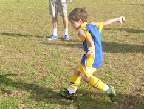
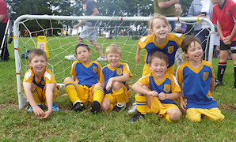
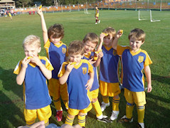
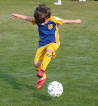
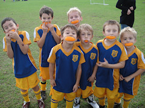
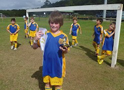
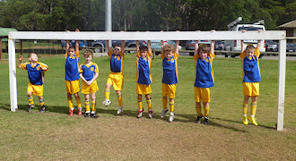

| Match Report - 02 April 2011 |
|
|
|
|
|
|
|
|
U6 Green
4 - 0
|
|
What a great start to the season.


The U6 Green team all arrived excited and were not thrown by the Putney Rangers
dropping for a quick 20 push ups before the commencement of the game.
It was an early first goal for Elijah in the first 5 minutes which sent the crowd
into overdrive as this was his first game of club soccer and his family were all
supporting on the sideline.
The team all played well together both in attack and defense. Elijah scored
another 2 goals and Jasmine 1 goal. Blake, Christian, Will and William all had
a lot great plays and it was smiles all round when Elijah was awarded the player
of the week.
Thanks to all the family that supported on the sideline!
- Sarah Robson
|
|
|
|
U6 Purple A
9 - 2
|
|


Under the guidance of an enthusiastic "Coach Tim" the boys of Koala Purple A were
keen to get on the field.
Everyone got in and had a go and there were some excellent goals scored. There were
some great skills being shown, these boys have really been paying attention at
training!
The half time oranges were a big hit and continued to be eaten as players ran back
on in the second half. Eli McPherson was player of the week for his great runs up
the field and goal scoring. All of the boys showed good sportsmanship, enthusiasm
and played fairly. Well done!!
- Nerradene Wolken
|
|
|
|
U6 Purple B
|
|
What a great start to the season with everyone so keen and eager to go on the
field. Our team showed lots of potential with some great kicks and marking up.
Madison and Ethan were both players of the match.
- Meryl Aldous
|
|
|
|
U6 White C
1 - 3
|
|
What an outstanding game to start the season! Will, Ryan, Kurt and Dylan played a
great game with no reserves! Will scored a courageous goal for his team and the
boys made it to full time with regular sugar intake!
Saints scored 3 goals to our 1!
- Lisa Mach
|
|
|
|
U7 Green
|
|
Our first game of the season, we were all very excited to get onto the field and
play for some of us our very first game of soccer. Our excitement changed when it
was clear the other team passed the ball better than we could. We tried very hard
to control the ball but the Putney Rangers had a little bit more practice and
structure. A good goal and our first for the season in the closing stages of the
match went to Alex.
- Marc van Hilten
|
|
|
|
U7 Red A
0 - 9
|
|
We had a 9.30am start at Magdala and the boys were eager to play. The look of
determination on their faces said it all, they were well and truly ready for soccer
season. All players showed great focus and Daniel, Felix and Joshua displayed some
fantastic dribbling skills. Cooper, Hayden and Jack tackled hard, showing a side
of them we look forward to seeing more of in the coming weeks, while Thomas took
an impressive slide to stop the opponents scoring a goal.
It was a tough game from start to finish but the boys didn’t give up. They
soldiered on and thought about the skills they would work on at next week's
training. Nick came to support the team, resting a previously broken arm, itching
to play in a couple of weeks time. Well done to Felix who put 100% into the game
and was the player of the match.
- Kylie Everitt
|
|
|
|
U7 White A
6 - 1
|
|
A brilliant start to the season for the White A’s.
A dominant display in the first half stunned the opposition and saw the team go
to half time 4-0 up. All players combined with a great effort to keep All Saints
scoreless, with Hayden & Cameron each collecting a pair of goals with strong runs
though the middle of the defence.
North Ryde continued with their fine performance in the second half with a further
2 goals - one to Emily breaking through a ton of defence in the goal box, and yet
another to Hayden to add to his already impressive total. Matthew, Isaac, and Loki
all had great first games, each working tirelessly to propel the ball forward in
attack and stifle the opposition in defence. Good effort by Joshua as well, saving
a certain last-minute goal by All Saints with a clearing kick just before the ball
trickled over the line.
Overall, a fantastic effort by a team that will just get better with every week.
- Will
|
|
|
|
U7 White B
9 - 0
|
|
What a way to start the season!!
The Under 7 White B’s arrived at the ground eager to get down to business, and
that’s exactly what the set about doing. With two team members sidelined the team
banded together and got straight down to business. Playing for the first time as
a team, the White B’s showed determination and stamina.
Leading 4 -0 at half time the team were truly inspired.
The second half was a continuation of the first with the final score being 9-0.
Congratulations to Luka, player of the week, scoring a fantastic 7 goals. Rounded
off with goals to Ashton and Lachlan.
Fantastic start!
- John Lee
|
|
|
|
U7 White C
6 - 1
|
|

A very proud coach (and father) has the pleasure to annonce that our team (U7 White
C) won in a very convincing game last weekend against the Gladesville Sharks.
The final score was 6-1 (with their goal being a home goal from one of our guys).
See the halftime picture of a well deserved orange eating indulgence.
Looking forward to next weekend.
- Zhiron Tune (Coach)
|
|
|
|
U8 Brown
7 - 3
|
|


What an action packed game this was. even before the whistle started, in fact the
team warm up involved the adventure to find a car spot on Saturday with all the
action at Magdala. The first game on the big field for our team ( and the first
ever soccer game for a few of our team). A big thanks goes to John Eadie for
coaching the boys to victory.
Declan started off in goals and what a big goal it was in comparison the smaller
field. The game opened with a quick goal by Sam and he followed that up with
another 2. Ben, Declan and Brooklyn also scored and the team spirits ran high.
Liam took the goalie position for the second half and did a great job. The teams
were well matched and all the team worked well together for their first game.
You can see by the team photo that spirits were soaring at the end of the game.
Well done everyone and special mention to Sam for being the player of the week.
- Neil Robson
|
|
|
|
U8 Orange
6 - 1
|
|
Welcome to the start of a new season and if the first match was anything to go by
it will be a cracker.
The boys were keen and it showed. From the first whistle the boys were showing off
their skills that were picked up from the off-season and polished after only two
training sessions. It’s hard to believe it was the first time the boys had played
as a team as the passing and crossing of the ball was very impressive. The midfield
boys made many opportunities that the forwards took advantage of leaving us with a
scorecard to be proud of. The defence also proved to be a formidable making it very
difficult for the opposition to penetrate.
A special mention also to the boys who helped the Rovers until they had a full
team. It shows great sportsmanship and you should be proud of yourselves. Well
done boys.
- Brian Smith
|
|
|
|
U8 Yellow
4 - 1
|
|
Team enjoyed the game enormously against the FC Redbacks. A very entertaining game
in which both teams were evenly matched in terms of skills, as indicated by the
half time score with both team deadlocked at 1 goal each.
Second half was also very entertaining, despite the score line favouring North Ryde,
with both teams putting on a great display of new found skills in creating space
and setting up passing opportunities. Final score 4-1 to North Ryde. Goal Scorers
- Damien Granet, Damien Granet, Christopher Watt and Fletcher Gusse.
- David Watt
|
|
|
|
U9 Division 1
1 - 0
|
|
Our first match of the season was a fantastic morning with North Ryde defeating
Glenhaven by 1 point. A challenging start to the season with the boys adjusting
to a new team & a bigger playing field.
The first half of the game was evenly matched with our apponents proved to be
quite challenging, but with our good defencive skills & some great team work,
allowed one of our forwards, Jarrod to score the first and only goal of the match.
The second half of the game proved to be even more challenging then the first with
Glenhaven in full attack mode keeping North Ryde in their own half for the majority
of the time. But again with our boys outstanding defence skills we were able to
hold off their attack. Due to an unfortunate hand ball in the closing stages of
the game, a penalty kick was given directly in front of the goal, which saw Ethan
our goal keeper in the second half with 100% commitment not allowing the opposition
to score (an amazing save).
Well done North Ryde on a great kick off to the season.
- Rob Cossettini (Manager)
|
|
|
|
U9 Division 3
2 - 2
|
|
First game of the season and everyone was pretty keen to get into it. We were the
away team at Meadowbank against Northern HFC. It was also first game for our young
referee, who did a good job. The boys got off to a slightly slow start but were
soon moving the ball forward and seemed to be holding the ball mainly in the
opposition half. A couple of attempts on goal didn't find their mark and the
opposition then got a run against the play and managed to find our net. Caught the
boys a bit by surprise but they were soon back into it. Unfortunately another run
by the opposition a few minutes later slipped another goal past Nathaniel in goals.
Down by two but still looking the stronger side, we went into our half time break.
A bit of encouragement from James (the coach) at half time pointed out to the boys
what they were doing well and where to work on. The second half saw the boys much
more active and it wasn't long before there were some attempt on goals. Unfortunately
none of them quite getting home until Nathaniel finally found the back of the net
half way into the second half. This seemed to rev the boys up more and they were now
definitely looking the stronger team. There was a lot of action up at the Northern
HFC goal mouth and countless goal attempts that were very close.
Darcy had many attempts from the front and after hitting the crossbar two or three
times finally hit it again with a deflection in - levelling the score. There was
about six minutes to go and the boys had many more close attempts with a few
scuffles around the goal mouth that just didn't go in our favour. Darcy was making
another attempt when right in front of goals copped a set of studs in the kneecap.
He was in a bit of pain but no real damage done - but he was off for the last few
minutes. A penalty was awarded and Nathaniel took the strike. He chose the right
direction but just went a fraction too wide which left the scores equal. About a
minute of play remained with still some tense moments but the whistle soon came
and the final result was a two all draw. Definately not a bad result but the boys
certainly had the upper hand most of the game and would have deserved the win.
Hopefully next week. All the boys played well and player of the match will be
handed out next week when all the certificates are done.
Final result: Northern HFC 2 - North Ryde 2
- Darren Mason (Manager)
|
|
|
|
U10 Division 6
5 - 1
|
|
The whole team turned up and all contributed greatly for an outstanding start to
the season. Jarvis and Hugh came away with two cracking goals each, and were very
strong in attack. Michael was magnificient in midfield, and supplied some great
crosses and passes through to the attacking players resulting in goals.
Hayley was great in the midfield and troubled the opposition with her speed and
determination. Our two goalies James and Connor, and all of the defending players
had a great game to only concede one goal to Pennant Hills. Great job team, let's
play in the same spirit for the rest of the season.
- Adam Barnier
|
|
|
|
U11 Division 1
4 - 1
|
|
The U11 Div 1 team welcomes a lot of new faces in the team this year in the form
of Sam, Oscar, Lennon, Lachlan and Dion, and their parents, as well as fit and
agile new coach David Poirier whose intensity at training is nearly as hard to
keep up with as his French accent. We hope that they will all be as comfortable
in their new club as they are with a football at the end of their feet.
The Eastwood St Andrews opposition came flying out of the starter blocks as soon
as the whistle blew and camped in the North Ryde defence zone for the first few
minutes of the match. Our boys responded quickly after absorbing the initial
shock of the attack, however, and soon the dividends of their training over the
past month paid off in a series of quick and short passes that moved the ball
from South to North at an impressive pace that soon culminated in their first
goal of the season.
There was no looking back after that. The boys kept pressing their advantage and
created endless opportunities with superb crosses and sublime pin-point through
balls that always landed at the running feet of our attack. The score was 2 - 1
at the break but the difference could easily have been greater if the cross-bar
was just a smidgeon higher. The second half started off where the first had ended
and there was little break in the relentless pace of the game. Another two goals
took the wind out of the opposition sails but to their credit they kept plugging
away at it, breaking through on several occasions, but only as far as our line of
defence which was all but penetrable on the day.
Well done to the team for putting into practice all the hard work and lessons
learnt at training, and the passion, tenacity and all-round sportsmanship they
take with them onto the field of play. There was never a dull moment for the
spectators on the sideline and the game as a whole was as exciting as it was
entertaining, and we look forward with interest to see how they develop and
progress in their U11 campaign.
- Mark Howard
|
|
|
|
U11 Division 3
5 - 2
|
|
The team played extremely well. The combinations and teamwork were especially
pleasing, considering that the boys had come from four different teams. We
were at the Ravens goal almost from the kick-off with Zac and Massie getting
around the defence easily. But it was Hamish who scored the first North Ryde
goal of the season in the 9th minute. The team kept up the pressure in attack
while the mid field and defence, led by Matthew and Adam, stopped any counter
attacks. After a North Ryde player was tripped in front of the Ravens goal,
Zac put away the penalty. The Ravens were shaken and, soon after, Massie came
down the left side and scored our third goal.
The second half started like the first, with a lot of pressure on the Ravens
defence. Robert made some strong runs, but it was Zac who scored the fourth
goal. Then it seemed as if the North Ryde team went on a bit of a holiday.
Ravens scored two quick goals, bringing it back to 4-2. The play see-sawed
from end to end. Late in the game a Ravens player hand balled in the box and
this time Hamish made no mistake in scoring from the penalty spot. All in all,
a great result for the first game of the season.
- Martin Borri
|
|
|
|
U11 Division 5
0 - 0
|
|
What a game! As my first game acting as team manager, I could not have been
more proud of our team. All the boys worked so well together, they listened,
acted and overall played a fantastic game. All players should and do deserve
a mention, however I feel I must say Tom Harte played brilliantly as goalie
and saved at least 4 attempts from the other team. Luke Smith was a trooper
as he fulfilled his position as mid-fielder dominating the game with much
energy and control. Saxon Boyd did the team so proud in his defending position
acting as a true force to be beckoned with.
In all honesty, all players should have a mention for their part in the game.
We were two players down for half the game and a player down for the full game.
To reach a final score in a draw of nil vs. nil was an amazing effort. Both
Coach Terry and I praise our boys and we can’t wait for the rest of the season.
All our opposition teams should be very afraid!
- Shelly Smith (Manager)
|
|
|
|
U15 Division 2
2 - 5
|
|
The first game of the year, luxury start at 11:15am as opposed to last year 7:45am
start, the boys played at North Ryde Oval against Redfield Lions a former division
one team.
We started playing well and had most of the ball, we had some near misses at goal
but by half time the score was 0-2 to Redfield. The Boys started strongly in the
second half with Daniel scoring and opening his account for the 2011 season.
Mitchell headed one in and the Game was close at 2-3. The rest of the game was even
but we did not mark close enough and allowed some easy shoots at goals to finish
at 2-5. It was one of does games were we played strongly but a few errors were
quite costly, so in game play we were a match but the results show otherwise.
The player of the match was Alex Yau and the trophy was presented by Paul Uhrig.
I would like to thank all the parents who come to support our team, you do make
a difference.
- Joe Rosenfels
|
|
|
|
All Age Division 17
0 - 2
|
|
Round 1 saw the AA17's take on West Pennant Hills Cherrybrook (WPHC) away. The
game started with both teams competing hard for the ball however WPHC started
to edge the challenges and through a free header and some good passing
interchanges found themselves 2-0 up after 35 minutes.
North Ryde started to come back into the game, hitting the post, however the
game was stopped due to an injury to one of the NRAA17 players just before half
time. An ambulance was called and the player left where he lay for safety reasons.
In keeping in line with current regulations the referee kept time ticking down
and no further action was seen on the field, the game ending 2-0.
- Simon
|